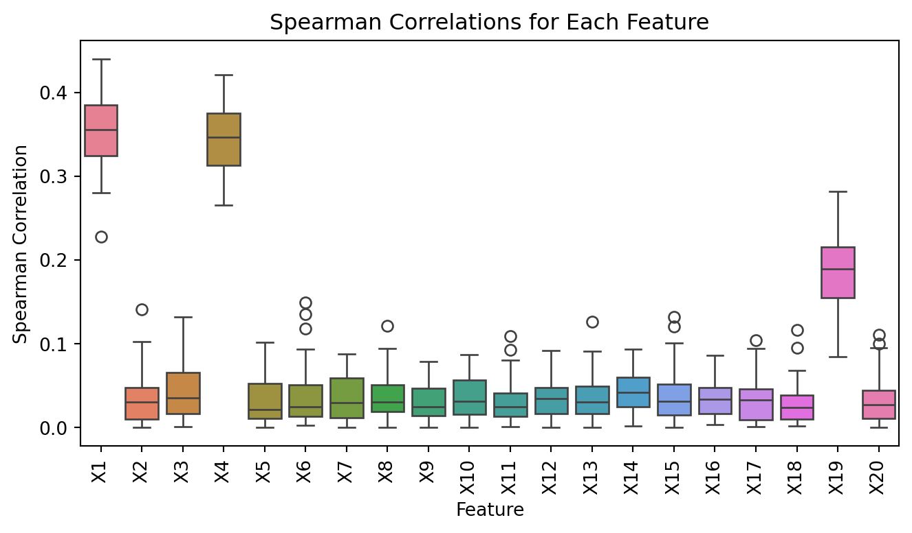
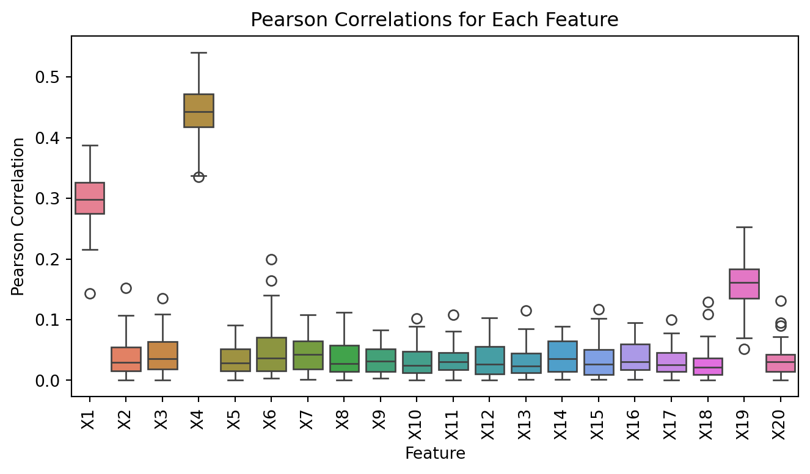
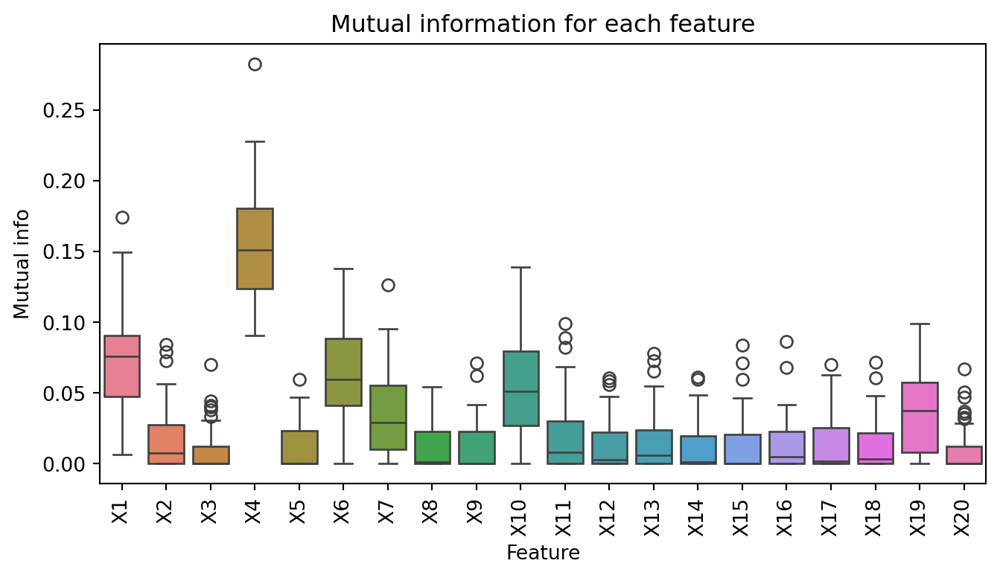
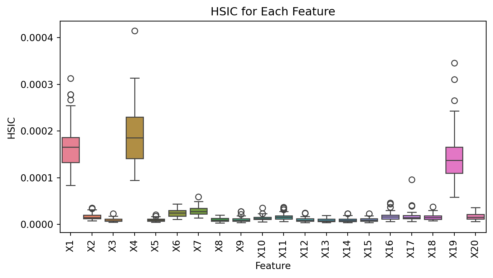

import numpy as np
import pandas as pd
import math
from sklearn.feature_selection import mutual_info_regression
import matplotlib.pyplot as plt
import seaborn as sns
# Function to generate bivariate Gaussian data
def generate_bivariate_gaussian(n, rho):
mu_X, mu_Y = np.random.normal(0, 1), np.random.normal(0, 1)
sigma_X, sigma_Y = np.random.chisquare(1), np.random.chisquare(1)
mean = [mu_X, mu_Y]
cov = [[sigma_X**2, rho * sigma_X * sigma_Y],
[rho * sigma_X * sigma_Y, sigma_Y**2]]
return np.random.multivariate_normal(mean, cov, size=n)
# Function to compute true mutual information
def true_mutual_information(rho):
return -0.5 * np.log(1 - rho**2)Features selection
Activity 1 : Mutual Information and HSIC
Feature selection is a process where you automatically or manually select those features which contribute most to your prediction variable or output in which you are interested in. Having irrelevant features in your data can decrease the accuracy of the models and make your model learn based on irrelevant features, therefore, it is important to select only the relevant features.
The usual tools used for features selection are based on correlation tests such as Pearson correlation or Spearman correlation when the variables are quantitatives or the Chi-Square test when the variables are qualitatives. However, these do not take in the account the relationship between quantitative and qualitatives variables. Moreover, for the pearson correlation or the spearman one, we are only interested in the linear(pearson) or monotonic(spearman) relationship between the variables.
In this notebook, we are interested in measuring any kind of relationship between variables, no matter what type of variables they are. For that, we will introduce the mutual information, based on the Kullback-Leibler divergence, which is a measure of the divergence between the joint distribution of X and Y and the product of their marginal distributions :
\[I(X;Y) = \int_{X} \int_{Y} p(x,y) \log \left( \frac{p(x,y)}{p(x)p(y)} \right)\]
where \(p(x,y)\) is the joint probability distribution function of X and Y, and \(p(x)\) and \(p(y)\) are the marginal probability distribution functions of X and Y. If the variables are independent, then the mutual information is equal to 0. If the variables are dependent, then the mutual information is greater than 0.
In order to have confidence in this measure, we will consider a bivariate gaussian variable \(Z=(X,Y)\) with mean \(\mu = (0,0)\) and covariance matrix \(\Sigma = \begin{pmatrix} \sigma^2_X & \rho \sigma_X \sigma_X \\ \rho \sigma_X \sigma_X & \sigma^2_Y \end{pmatrix}\). We will compute the mutual information between X and Y for a grid a \(\rho\) between 0.01 and 0.99 using 1000 size samples repeated 100 times and see how the mutual information behaves and compare it the theorical value of the mutual information which is equal to \(-\frac{1}{2} \log(1-\rho^2)\).
1. Accuracy of mutual information estimation
# Initialize parameters
n_samples = 1000
n_repeats = 100
rho_values = np.linspace(0.01, 0.99, 10)
# Store mutual information estimates
estimated_mi = []
true_mi_values = []
for rho in rho_values:
mi_estimates = []
for _ in range(n_repeats):
# Generate data
data_test = generate_bivariate_gaussian(n_samples, rho)
X = data_test[:, 0].reshape(-1, 1) # Feature
Y = data_test[:, 1] # Target
# Estimate mutual information
mi = mutual_info_regression(X, Y, discrete_features=False)
mi_estimates.append(mi[0]) # mutual_info_regression returns an array
# Store results
estimated_mi.append(mi_estimates)
true_mi_values.append(true_mutual_information(rho))
# Convert estimated MI to array for easy plotting
estimated_mi = np.array(estimated_mi)
# Plot boxplots of the estimated MI for each value of rho
plt.figure(figsize=(8, 4))
sns.boxplot(data=estimated_mi.T)
plt.plot(np.arange(len(rho_values)), true_mi_values, color='red', marker='o', linestyle='-', label="True MI")
plt.xticks(ticks=np.arange(len(rho_values)), labels=[f'{rho:.2f}' for rho in rho_values])
plt.xlabel(r'$\rho$')
plt.ylabel('Mutual Information')
plt.title('Estimated vs True Mutual Information')
plt.legend()
plt.show()
As we can see in the graph above, the mutual information is able to capture the relationship between the variables, even if they are not linearly related. In fact, as the parameter \(\rho\) increases, the mutual information increases as well. Morever, between the theoretical value of the mutual information and the empirical one, we can see that they are very close to each other. Hence, the function mutual_info_regression is well implemented and can be used to select the relevant features in a dataset.
2. Comparison between mutual information and correlation tests
We will use a simulate dataset where we know the relationship between the variables and see how the pearson, spearman an mutual information perform. We will consider a dataset where the 15 first variables are normal \(X_{i = 1,\dots,15} \sim \mathcal{N}(0,1)\) and the 5 last variables are uniform \(X_{i = 16,\dots,20} \sim \mathcal{U}(0,1)\). We will consider the target variable \(Y\) as a linear combination of some variables :
\[ Y = 2X_1 + X_7^2 + X_4^3 + 3 X_2 X_{11} + 2 \sin(2\pi X_{19}) + 3X_6^2\cos(2\pi X_{17})\]
# Function to generate data
def generate_data(n):
data = pd.DataFrame()
for i in range(15):
data[f"X{i+1}"] = np.random.normal(0, 1, n)
for i in range(5):
data[f"X{i+16}"] = np.random.uniform(0, 1, n)
pi = math.pi
data["Y"] = 2 * data["X1"] + data["X7"]**2 + data["X4"]**3 + 3 * data["X2"] * data["X11"] + \
2 * np.sin(2 * pi * data["X19"]) + 3 * (data["X6"]**2) * np.cos(2 * pi * data["X10"])
return data# compute the correlation between each feature and the target
from scipy.stats import pearsonr, spearmanr
concat_spearman = []
concat_pearson = []
for sim in range(50):
data = generate_data(500)
spearman_corr = [spearmanr(data[col], data["Y"])[0] for col in data.columns[:-1]]
pearson_corr = [pearsonr(data[col], data["Y"])[0] for col in data.columns[:-1]]
concat_spearman.append(np.abs(spearman_corr))
concat_pearson.append(np.abs(pearson_corr))import pandas as pd
feature_names = data.columns[:-1] # Get feature names from the dataset
spearman_df = pd.DataFrame(concat_spearman, columns=feature_names)
pearson_df = pd.DataFrame(concat_pearson, columns=feature_names)
# Spearman correlations
plt.figure(figsize=(8, 4))
sns.boxplot(data=spearman_df)
plt.title('Spearman Correlations for Each Feature')
plt.ylabel('Spearman Correlation')
plt.xlabel('Feature')
plt.xticks(rotation=90)
plt.show()
# Pearson correlations
plt.figure(figsize=(8, 4))
sns.boxplot(data=pearson_df)
plt.title('Pearson Correlations for Each Feature')
plt.ylabel('Pearson Correlation')
plt.xlabel('Feature')
plt.xticks(rotation=90)
plt.show()
As we can see, the spearman and pearson correlation can not identify all the relevant features, in fact, they are only able to identify the relevant variables \(X_1\), \(X_4\) and \(X_{19}\) related to the target variable \(Y\). If we are interested in selecting the relevant features using the mutual information, we can identify more relevant features such as \(X_1\), \(X_4\), \(X_6\), \(X_7\), and \(X_{19}\), however some irrelevant features are also selected such as \(X_2\) and \(X_{11}\).
mutual_info = []
for sim in range(50):
data = generate_data(500)
mi_corr = [mutual_info_regression(data[[col]], data["Y"], discrete_features=False)[0] for col in data.columns[:-1]]
mutual_info.append(mi_corr)
mutual_info = pd.DataFrame(mutual_info, columns=feature_names)
# Plotting boxplots for Spearman correlations
plt.figure(figsize=(8, 4))
sns.boxplot(data=mutual_info)
plt.title('Mutual information for each feature')
plt.ylabel('Mutual info')
plt.xlabel('Feature')
plt.xticks(rotation=90) # Rotate feature names if there are many features
plt.show()
To conclude, the mutual information seems to be a good tool to select the relevant features in a dataset. In fact, it is able to capture the relationship between the variables, no matter what type of variables they are.
What about feature selection with lasso regression?
We might be interested in the behavior of the lasso regression in the same dataset. We will use the Lasso class from the sklearn.linear_model module to fit the lasso regression on the dataset and see how it performs in selecting the relevant features. We will use the LassoCV class to select the best value of the regularization parameter \(\alpha\) using cross-validation.
from sklearn.linear_model import LassoCV
import numpy as np
import pandas as pd
from sklearn.preprocessing import StandardScaler
n_simulations = 50
n_samples = 500
n_features = data.shape[1] - 1
selected_features = np.zeros((n_simulations, n_features))
scaler = StandardScaler()
for sim in range(n_simulations):
# Generate data
data = generate_data(n_samples)
X = data.drop(columns=["Y"])
X_scaled = scaler.fit_transform(X)
y = data["Y"]
lasso = LassoCV().fit(X_scaled, y)
selected_features[sim, :] = (lasso.coef_ != 0).astype(int)# Frequency of selection for each feature
selection_frequency = np.mean(selected_features, axis=0)
# Create a DataFrame for better visualization
selection_df = pd.DataFrame({
'Feature': X.columns,
'Selection Frequency': selection_frequency
})
# You can also visualize this with a bar plot
import matplotlib.pyplot as plt
import seaborn as sns
plt.figure(figsize=(8, 4))
sns.barplot(x='Feature', y='Selection Frequency', data=selection_df,color="blue")
plt.title('Feature Selection Frequency by Lasso')
plt.xticks(rotation=90)
plt.show()As we can see, the lasse regression is able to select the relevant features in the dataset. However, it is not able to select all the relevant features, hence it might always be interesting to use the mutual information (combined with lasso regression or other correlations tests) to select the relevant features in a dataset.
3. Hilbert-Schmidt Independence Criterion
We can also use the kernel trick applied to the kullback-leibler divergence to measure the mutual information between the variables. This is called the Maximum Mean Discrepancy (MMD) and is defined as :
\[MMD^2(X,Y) = \mathbb{E}_{x,x' \sim X} [k(x,x')] + \mathbb{E}_{y,y' \sim Y} [k(y,y')] - 2 \mathbb{E}_{x \sim X, y \sim Y} [k(x,y)]\]
where \(k\) is a kernel function. The MMD is equal to 0 if and only if the two distributions are equal. We can use the MMD class from the sklearn.metrics.pairwise module to compute the MMD between the variables. For a continuous variables, this writes :
\[MMD^2(X,Y) = \int_X k(x,x') \left[ p(x) - q(x)\right] \left[ p(x') - q(x')\right] dxdx'\]
where \(p\) and \(q\) are the probability distribution functions of X and Y.
This is also defined as the Hilbert-Schmidt Independence Criterion (HSIC) when we are interested in the measure of divergence between the joint distribution of X and Y and the product of their marginal distributions. The estimate of the HSIC is given by :
\[HSIC(X,Y) = \frac{1}{n^2} \text{tr}(KHLH)\]
where \(K\) is the kernel matrix of X and \(L\) is the kernel matrix of Y and H is the centering matrix \(H = I - \frac{1}{n} \mathbf{1} \mathbf{1}^T\). Since the HSIC is not implemented in the mainstream libraries, we will implement it ourselves using the sobolev kernel for X and Y with :
\[k(x,x') = 1 + (z_i - 0.5) (z_j - 0.5) + \frac{1}{2} ((z_i-z_j)^2 - |z_i -z_j| +1/6)\]
def sobolev_kernel(x,y):
return 1 + (x - 0.5)*(y - 0.5) + (1/2)*( (x-y)**2 - np.abs(x-y) + 1/6)
def compute_gram_matrix(z):
z = np.asarray(z)
M = sobolev_kernel(z[:,None],z[None,:])
return M
def hsic(X, Y):
n = X.shape[0]
H = np.eye(n) - (1 / n) * np.ones((n, n))
# Compute Gram matrices with Sobolev kernel
K = compute_gram_matrix(X)
L = compute_gram_matrix(Y)
# Calculate HSIC
hsic_value = (1 / (n - 1) ** 2) * np.trace(K @ H @ L @ H)
return hsic_valuefrom sklearn.preprocessing import MinMaxScaler
hsic_values = []
for sim in range(50):
data = generate_data(500)
scaler = MinMaxScaler()
data_scaled = pd.DataFrame(scaler.fit_transform(data), columns=data.columns)
hsic_var = [hsic(data_scaled[col], data_scaled["Y"]) for col in data.columns[:-1]]
hsic_values.append(hsic_var)
hsic_df = pd.DataFrame(hsic_values, columns=feature_names)# Plotting boxplots for Spearman correlations
plt.figure(figsize=(8, 4))
sns.boxplot(data=hsic_df)
plt.title('HSIC for Each Feature')
plt.ylabel('HSIC')
plt.xlabel('Feature')
plt.xticks(rotation=90) # Rotate feature names if there are many features
plt.show()
Threshold selection for mutual information and HSIC
The hilbert-schmidt independence criterion, the mutual information are able to capture the relationship between the variables, no matter what type of variables they are. However, it needs a definition of a threshold to select the relevant features in a dataset. As for correlation tests like pearson or speaman, we might use statistical tests to select the relevant features in a dataset. However, for mutual information and HSIC, we use the permutation test where the test statistic distribution under the null hypothesis (X and Y are independent), is estimated with several data permutations. The p-value is then computed as the proportion of test statistics that are more extreme than the observed test statistic.
from sklearn.utils import resample
data = generate_data(500)
Y = data["Y"]
X = data.drop(columns=["Y"])
scaler = MinMaxScaler()
data_scaled = pd.DataFrame(scaler.fit_transform(data), columns=data.columns)
X_scaled = data_scaled.drop(columns=["Y"])
Y_scaled = data_scaled["Y"]
mi_train = mutual_info_regression(X, Y)
n_rep = 500
all_miXYindep = np.zeros((n_rep, n_features))
all_HSICindep = np.zeros((n_rep, n_features))
for rep in range(n_rep):
# Permutation
yb = resample(Y, replace = False)
# Compute mutual information between all features and Y
mi_temp = mutual_info_regression(X, np.ravel(yb))
# Store the MI from this repetition
all_miXYindep[rep, :] = mi_temp
# Permutation
yb_train = resample(Y_scaled, replace = False)
p_values_mi = np.mean(mi_train < all_miXYindep, axis=0)plt.figure(figsize=(8, 4))
plt.plot(p_values_mi, 'o')
plt.title('Mutual Information p-value')
plt.axhline(y=0.05, color='r', linestyle='-')
plt.xlabel('Features')
plt.ylabel('p-value')
plt.show()Depending on the pvalues, we can select the relevant features in a dataset. Using the mutual information, the variables selected are listed below :
print("Selected variables with MI p-values %s " % np.where(p_values_mi < 0.05))Selected variables with MI p-values [0 2 3 5 8]